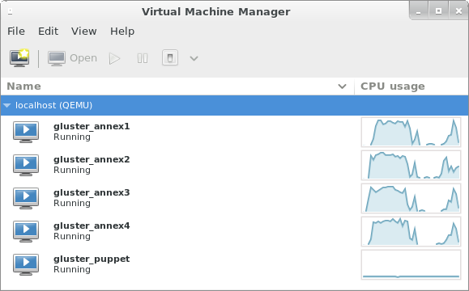
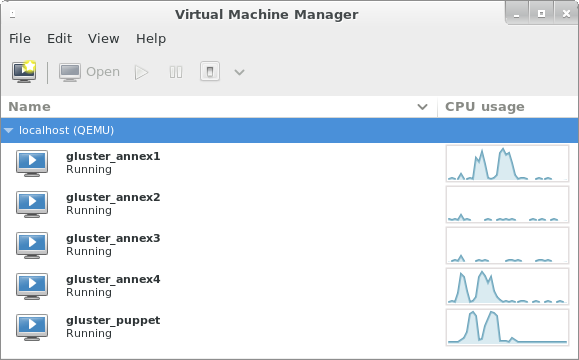
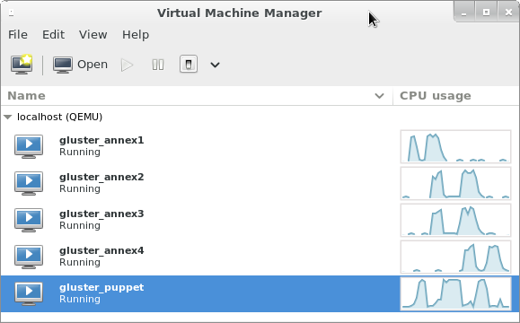

Puppet-Gluster was always about automating the deployment of GlusterFS. Getting your own Puppet server and the associated infrastructure running was never included “out of the box”. Today, it is! (This is big news!)
I’ve used Vagrant to automatically build these GlusterFS clusters. I’ve tested this with Fedora 20, and vagrant-libvirt. This won’t work with Fedora 19 because of bz#876541. I recommend first reading my earlier articles for Vagrant and Fedora:
Once you're comfortable with the material in the above articles, we can continue...The short answer:
$ sudo service nfs start
$ git clone --recursive https://github.com/purpleidea/puppet-gluster.git
$ cd puppet-gluster/vagrant/gluster/
$ vagrant up puppet && sudo -v && vagrant uptail -F log files, or watch -n 1 gluster status commands.
The whole process including the one-time downloads took about 30 minutes. If you’ve got faster internet that I do, I’m sure you can cut that down to under 20. Building the gluster hosts themselves probably takes about 15 minutes.
Enjoy your new Gluster cluster!
Screenshots!
I took a few screenshots to make this more visual for you. I like to have virt-manager open so that I can visually see what’s going on:
|  |
| The annex{1..4} machines are building in parallel. The valleys happened when the machines were waiting for the vagrant DHCP server (dnsmasq). |
Here we can see two puppet runs happening on annex1 and annex4.
|  |
| Notice the two peaks on the puppet server which correspond to the valleys on annex{1,4}. |
Here’s another example, with four hosts working in parallel:
|  |
| Can you answer why the annex machines have two peaks? Why are the second peaks bigger? |
Tell me more!
Okay, let’s start with the command sequence shown above.
$ sudo service nfs start
This needs to be run once if the NFS server on your host is not already running. It is used to provide folder synchronization for the Vagrant guest machines. I offer more information about the NFS synchronization in an earlier article.
$ git clone --recursive https://github.com/purpleidea/puppet-gluster.git
This will pull down the Puppet-Gluster source, and all the necessary submodules.
$ cd puppet-gluster/vagrant/gluster/
The Puppet-Gluster source contains a vagrant subdirectory. I’ve included a gluster subdirectory inside it, so that your machines get a sensible prefix. In the future, this might not be necessary.
$ vagrant up puppet && sudo -v && vagrant up
This is where the fun stuff happens. You’ll need a base box image to run machines with Vagrant. Luckily, I’ve already built one for you, and it is generously hosted by the Gluster community.
The very first time you run this Vagrant command, it will download this image automatically, install it and then continue the build process. This initial box download and installation only happens once. Subsequent Puppet-Gluster+Vagrant deploys and re-deploys won’t need to re-download the base image!
This command starts by building the puppet server. Vagrant might use sudo to prompt you for root access. This is used to manage your /etc/exports file. After the puppet server is finished building, we refresh the sudo cache to avoid bug #2680.
The last vagrant up command starts up the remaining gluster hosts in parallel, and kicks off the initial puppet runs. As I mentioned above, the gluster hosts will still be building. Puppet automatically waits for the cluster to “settle” and enter a steady state (no host/brick changes) before it creates the first volume. You can log in and tail -F log files, or watch -n 1 gluster status commands.
At this point, your cluster is running and you can do whatever you want with it! Puppet-Gluster+Vagrant is meant to be easy. If this wasn’t easy, or you can think of a way to make this better, let me know!
I want N hosts, not 4:
By default, this will build four (4) gluster hosts. I’ve spent a lot of time writing a fancy Vagrantfile, to give you speed and configurability. If you’d like to set a different number of hosts, you’ll first need to destroy the hosts that you’ve built already:
$ vagrant destroy annex{1..4}
You don’t have to rebuild the puppet server because this command is clever and automatically cleans the old host entries from it! This makes re-deploying even faster!
Then, run the vagrant up command with the –gluster-count= argument. Example:
$ vagrant up --gluster-count=8
This is also configurable in the puppet-gluster.yaml file which will appear in your vagrant working directory. Remember that before you change any configuration option, you should destroy the affected hosts first, otherwise vagrant can get confused about the current machine state.
I want to test a different GlusterFS version:
By default, this will use the packages from:
https://download.gluster.org/pub/gluster/glusterfs/LATEST/
but if you’d like to pick a specific GlusterFS version you can do so with the –gluster-version=<version> argument. Example:
$ vagrant up --gluster-version='3.4.2-1.el6'
This is also stored, and configurable in the puppet-gluster.yaml file.
Does (repeating) this consume a lot of bandwidth?
Not really, no. There is an initial download of about 450MB for the base image. You’ll only ever need to download this again if I publish an updated version.
Each deployment will hit a public mirror to download the necessary puppet, GlusterFS and keepalived packages. The puppet server caused about 115MB of package downloads, and each gluster host needed about 58MB.
The great thing about this setup, is that it is integrated with vagrant-cachier, so that you don’t have to re-download packages. When building the gluster hosts in parallel (the default), each host will have to download the necessary packages into a separate directory. If you’d like each host to share the same cache folder, and save yourself 58MB or so per machine, you’ll need to build in series. You can do this with:
$ vagrant up --no-parallel
I chose speed over preserving bandwidth, so I do not recommend this option. If your ISP has a bandwidth cap, you should find one that isn’t crippled.
Subsequent re-builds won’t download any packages that haven’t already been downloaded.
What should I look for?
Once the vagrant commands are done running, you’ll want to look at something to see how your machines are doing. I like to log in and run different commands. I usually log in like this:
$ vcssh --screen root@annex{1..4}
I explain how to do this kind of magic in an earlier post. I then run some of the following commands:
# tail -F /var/log/messages
This lets me see what the machine is doing. I can see puppet runs and other useful information fly by.
# ip a s eth2
This lets me check that the VIP is working correctly, and which machine it’s on. This should usually be the first machine.
# ps auxww | grep again.[py]
This lets me see if puppet has scheduled another puppet run. My scripts automatically do this when they decide that there is still building (deployment) left to do. If you see a python again.py process, this means it is sleeping and will wake up to continue shortly.
# gluster peer status
This lets me see which hosts have connected, and what state they’re in.
# gluster volume info
This lets me see if Puppet-Gluster has built me a volume yet. By default it builds one distributed volume named puppet.
I want to configure this differently!
Okay, you’re more than welcome to! All of the scripts can be customized. If you want to configure the volume(s) differently, you’ll want to look in the:
puppet-gluster/vagrant/gluster/puppet/manifests/site.pp
file. The gluster::simple class is well-documented, and can be configured however you like. If you want to do more serious hacking, have a look at the Vagrantfile, the source, and the submodules. Of course the GlusterFS source is a great place to hack too!
The network block, domain, and other parameters are all configurable inside of the Vagrantfile. I’ve tried to use sensible defaults where possible. I’m using example.com as the default domain. Yes, this will work fine on your private network. DNS is currently configured with the /etc/hosts file. I wrote some magic into the Vagrantfile so that the slow /etc/hosts shell provisioning only has to happen once per machine! If you have a better, functioning, alternative, please let me know!
What’s the greatest number of machines this will scale to?
Good question! I’d like to know too! I know that GlusterFS probably can’t scale to 1000 hosts yet. Keepalived can’t support more than 256 priorities, therefore Puppet-Gluster can’t scale beyond that count until a suitable fix can be found. There are likely some earlier limits inside of Puppet-Gluster due to maximum command line length constraints that you’ll hit. If you find any, let me know and I’ll patch them. Patches now cost around seven karma points. Other than those limits, there’s the limit of my hardware. Since this is all being virtualized on a lowly X201, my tests are limited. An upgrade would be awesome!
Can I use this to test QA releases, point releases and new GlusterFS versions?
Absolutely! That’s the idea. There are two caveats:
https://github.com/purpleidea/puppet-gluster/blob/master/manifests/repo.pp#L18
The gluster community is working on this, and as soon as a solution is found, I’ll patch Puppet-Gluster to support it. If you want to disable automatic repository management (in gluster::simple) and manage this yourself with the vagrant shell provisioner, you’re able to do so now.
Updating the puppet source:
If you make a change to the puppet source, but you don’t want to rebuild the puppet virtual machine, you don’t have to. All you have to do is run:
$ vagrant provision puppet
This will update the puppet server with any changes made to the source tree at:
puppet-gluster/vagrant/gluster/puppet/
Keep in mind that the modules subdirectory contains all the necessary puppet submodules, and a clone of puppet-gluster itself. You’ll first need to run make inside of:
puppet-gluster/vagrant/gluster/puppet/modules/
to refresh the local clone. To see what’s going on, or to customize the process, you can look at the Makefile.
Client machines:
At the moment, this doesn’t build separate machines for gluster client use. You can either mount your gluster pool from the puppet server, another gluster server, or if you add the right DNS entries to your /etc/hosts, you can mount the volume on your host machine. If you really want Vagrant to build client machines, you’ll have to persuade me.
What about firewalls?
Normally I use shorewall to manage the firewall. It integrates well with Puppet-Gluster, and does a great job. For an unexplained reason, it seems to be blocking my VRRP (keepalived) traffic, and I had to disable it. I think this is due to a libvirt networking bug, but I can’t prove it yet. If you can help debug this issue, please let me know! To reproduce it, enable the firewall and shorewall directives in:
puppet-gluster/vagrant/gluster/puppet/manifests/site.pp
and then get keepalived to work.
Re-provisioning a machine after a long wait throws an error:
You might be hitting: vagrant-cachier #74. If you do, there is an available workaround.
Keepalived shows “invalid passwd!” messages in the logs:
This is expected. This happens because we build a distributed password for use with keepalived. Before the cluster state has settled, the password will be different from host to host. Only when the cluster is coherent will the password be identical everywhere, which incidentally is the only time when the VIP matters.
How did you build that awesome base image?
I used virt-builder, some scripts, and a clever Makefile. I’ll be publishing this code shortly. Hasn’t this been enough to keep you busy for a while?
Are you still here?
If you’ve read this far, then good for you! I’m sorry that it has been a long read, but I figured I would try to answer everyone’s questions in advance. I’d like to hear your comments! I get very little feedback, and I’ve never gotten a single tip! If you find this useful, please let me know.
Until then,
Happy hacking,
James
You can hire James and his team at m9rx corporation.
You can follow James on Mastodon for more frequent updates and other random thoughts.
You can follow James on Twitter for more frequent updates and other random thoughts.
You can support James on GitHub if you'd like to help sustain this kind of content.
You can support James on Patreon if you'd like to help sustain this kind of content.
Your comment has been submitted and will be published if it gets approved.
Click here to see the patch you generated.
{kind=link}
{kind=link}
{kind=link}
Comments
Nothing yet.
Post a comment